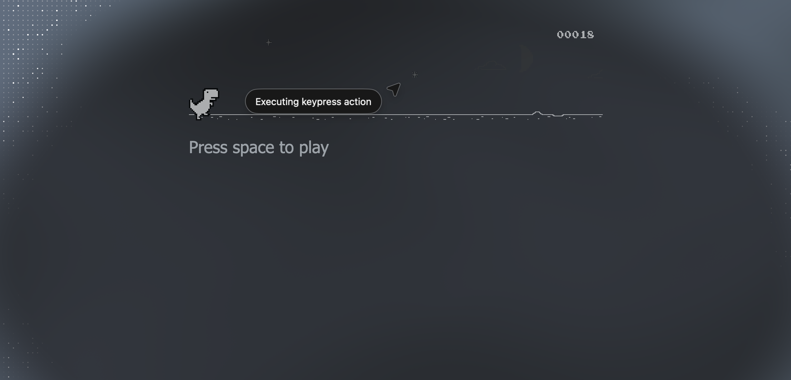
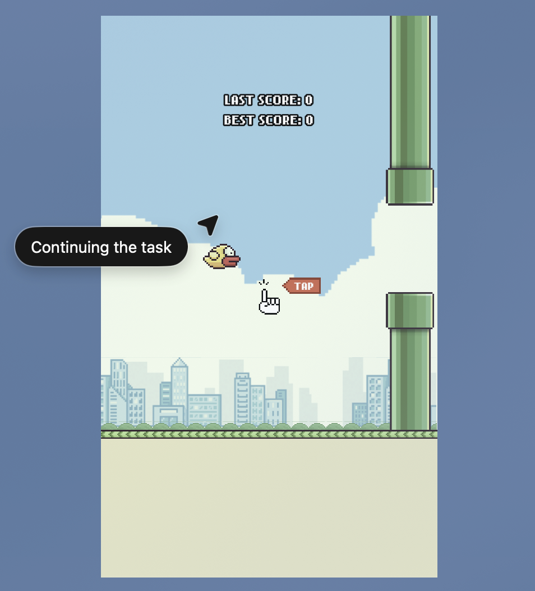
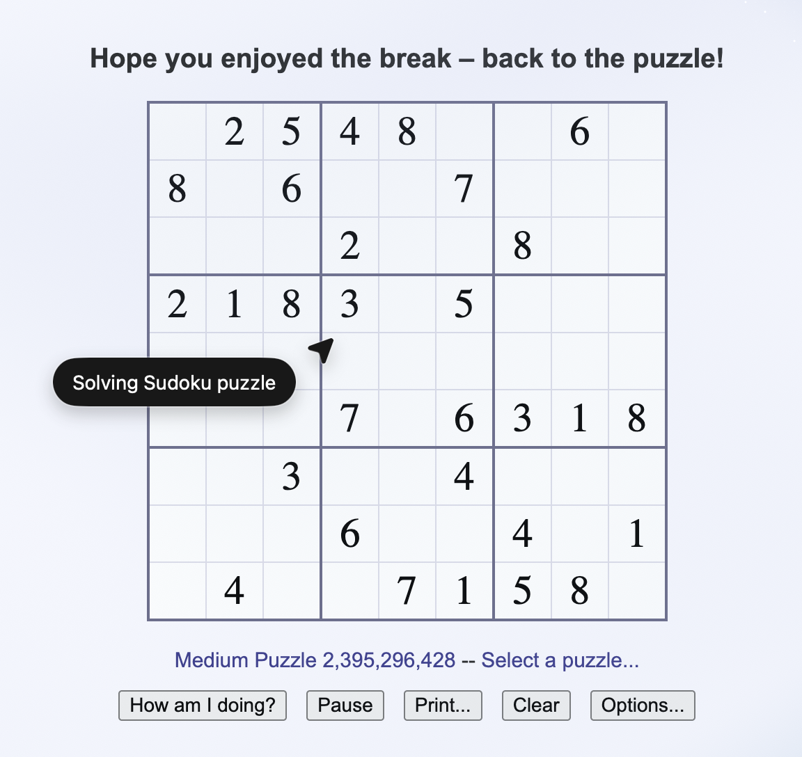

Game Screenshots






Your Name1, Coauthor A2, Coauthor B1, Coauthor C3
1Affiliation One · 2Affiliation Two · 3Affiliation Three
ChatGPT Atlas agent excels at logical, static web tasks such as Sudoku but falters in reactive, time-sensitive games like Flappy Bird, highlighting a gap between reasoning strength and real-time interaction skill.
OpenAI's ChatGPT Atlas introduces new capabilities for web interaction, enabling the model to analyze webpages, process user intents, and execute cursor and keyboard inputs directly within the browser. While its capacity for information retrieval tasks has been demonstrated, its performance in dynamic, interactive environments remains less explored. In this study, we conduct an early evaluation of Atlas's web interaction capabilities using browser-based games as test scenarios, including Google's T-Rex Runner, Sudoku, Flappy Bird, and Stein.world. We employ in-game performance scores as quantitative metrics to assess performance across different task types. Our results show that Atlas performs strongly in logical reasoning tasks like Sudoku, completing puzzles significantly faster than human baselines, but struggles substantially in real-time games requiring precise timing and motor control, often failing to progress beyond initial obstacles. These findings suggest that while Atlas demonstrates capable analytical processing, there remain notable limitations in dynamic web environments requiring real-time interaction. You can include inline code, references, or links.
@article{yourkey2025project,
title = {Project Title: Concise Tagline},
author = {Your Name and Coauthor A and Coauthor B and Coauthor C},
journal = {arXiv preprint arXiv:2501.01234},
year = {2025}
}
We thank ABC for discussion and XYZ for compute. Replace with your acknowledgements.